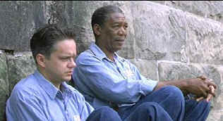

| Shawshank
Redemption/A-,A |
| Wanrer/1994/142/ANA
1.85 |
There is an old fashioned sense about The
Shawshank Redemption, a feeling of timeless quality that pervades every aspect of the film. The
ground it covers is not earth shattering. It’s a prison drama. An innocent man convicted of
a crime, thrown together with hardened criminals, butts heads with deviant inmates, sadistic
guards, corrupt officials. It’s been done before, but this film bases its center on humanity and
character in a way that redeems the movie from wallowing and ultimately drowning in a pool of the
ordinary. The Shawshank Redemption captures the qualities of a dark fairy tale which
delivers to its audience a refreshingly satisfying ending.
 |
| Andy and Red ponder reality. ©Warner |
Frank Darabont’s first feature as director is also is first solo
writing credit. Adapting Stephen King's novella, Rita Hayworth and the Shawshank Redemption,
Darabont finds the right rhythms to make music of King. Darabont understands and commands the
language of film. The filmmaking displays an elegance and patience that belies the freshman status
of the director. The camera work and editing flow with the film and serve to support and story
telling rather than shouting out their own merits. Ironically, Darabont's sophomore film, another
prison drama based on a Stephen King short work, The Green Mile, will never hold a candle to
this virgin effort.
There’s a consistent quality to the acting that must pay homage to the skill
of the director in drawing out the best that this fine cast has to give. Tim Robbins continues to
display enormous talent and versatility in the role of innocent man Andy Dufresne. Robbins portrays
Andy with a perfect balance of coldness, innocence, strength and vulnerability. It’s a top-notch
performance. Complimenting the screen work of Robbins is Morgan Freeman’s Red. Freeman’s fluid
delivery of the extensive narration is paramount to the success of The Shawshank Redemption.
The relationship between Red and Andy and the way it affects each man is beautifully acted and
scripted. Each man helps the other to survive. Each actor stimulates the best from the other. James
Whitmore has a fabulous supporting role as Brooks, the old con gathering dust in the prison
library.
All the elements fall into place on this excellent film. Roger
Deakins provides eloquent support for director Darabont with flawless and restrained
cinematography. Darabont and Deakins develop their own language of film with subtle use of camera
movement. The score written by Thomas Newman, which weaves a haunting recurring theme, provides the
proper measure of uplifting spirit to serve the story to best effect.
Warner has done an outstanding job of preserving the beauty of
this film on DVD. Resolution is extracted to the fullest. The punchy picture is perfectly balanced.
Dark prison cells or the ice blue of the prison yard are rendered accurately. Shadow is
revealing in every circumstance. Color saturation is vibrant with no hint of smearing. The range of
skin tones is outstanding. Though the ambient detail is not very aggressive the overall sound is
nicely mixed in Dolby Digital 5:1 Surround.* Newman’s score is airy and maintains a fine balance
with dialogue.
*Paulo Roberto Elias pointed out our initial mistake in citing
2.0 matrixed sound. Thanks Paulo. |
|
|
|

The Feature Archive
has articles ranging from Akira
Kurosawa to Blonde Bimbos and John Ford.
Redeeming
the Writer:
A Conversation with Frank Darabont

Movie Rage: Death in the Aisles
Everyone knows what it feels like to get angry at the
movies these days. Here's a humorous but not so delightful view of big screen misery.
 
DVDPlanet is the DVD
incarnation of legendary laser retailer Ken Crane's. Deep discounts and serious service.
 Direct from the corridors of the Home Theater Forum, Home Theater Talk is the
newest place on the Net to discuss everything home theater. Friendly atmosphere and knowledgeable
folks are the secret ingredients. Direct from the corridors of the Home Theater Forum, Home Theater Talk is the
newest place on the Net to discuss everything home theater. Friendly atmosphere and knowledgeable
folks are the secret ingredients.

A self-proclaimed bastion of irreverence place where Joe
Public smacks the heck out of the studio execs that treat us like cattle.

The official site for information about the great comic director. A treat for connoisseurs of
classic Hollywood madcap.

The
Movie Poster Archive includes extensive poster images from the films of stars like Susan Hayward,
Kirk Douglas, Katharine Hepburn and many more. Our featured star is Tyrone
Power.
|